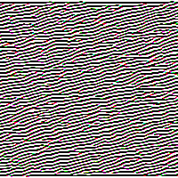
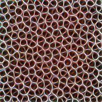
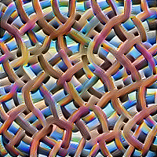
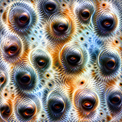
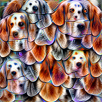
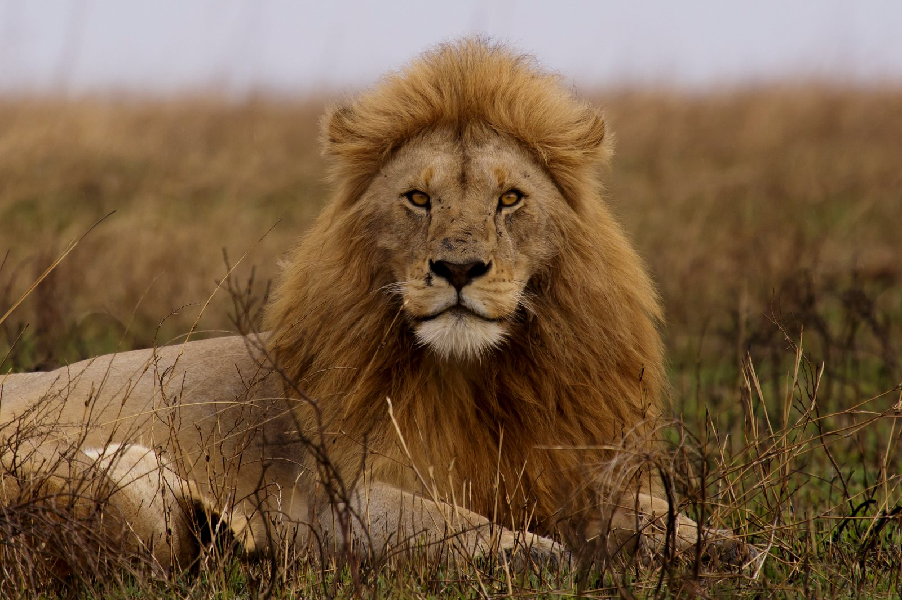
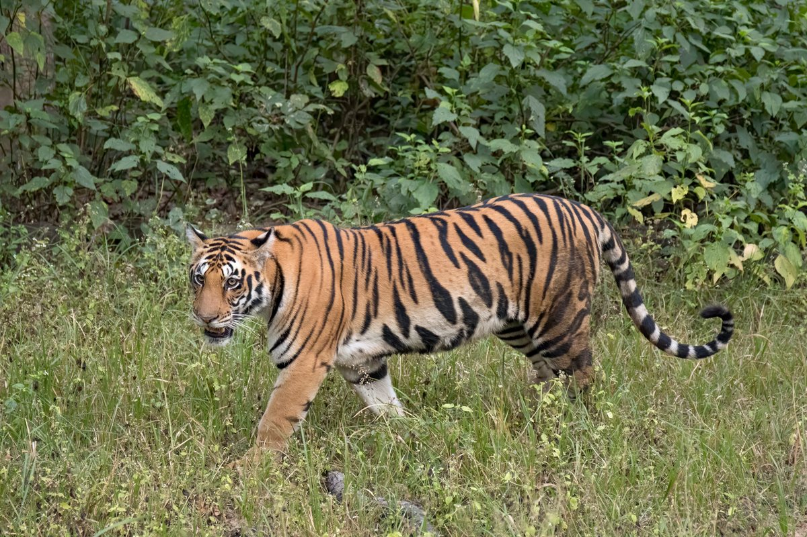

name: title layout: true class: cover --- count: false .section-mark.center[ ## Deep learning for decisions ### When a network is worth its cost, and how to borrow a trained one <br /> Oscar Esteban <<code>oscar.esteban@hevs.ch</code>> <br /> EAD · Exploration avancée de données et intelligence décisionnelle · 23.10.2026 <div style="font-size: 0.8em; margin-top: 1.2em;"><a href="https://oesteban.github.io/msba-ead-2026-2027-slides/day2/05-dl/index.html"> https://oesteban.github.io/msba-ead-2026-2027-slides/day2/05-dl/index.html </a></div> ] ??? **This deck turns from tables to photos: when a deep network is worth its cost, and how a firm borrows one already trained.** It shows what a photo is to a model, how a network learns its weights from its errors, why tables still suit trees, and why a firm borrows a network trained on millions of photos rather than training its own. Hands-on 4 then trains an image classifier in Dataiku DSS to tell lions from tigers. --- name: newsection layout: true .perma-sidebar[ <p class="rotate"> <a rel="license" href="http://creativecommons.org/licenses/by/4.0/"><img alt="Creative Commons License" style="border-width:0; height: 20px; padding-top: 6px;" src="https://i.creativecommons.org/l/by/4.0/88x31.png" /></a> <span style="padding-left: 10px; font-weight: 600;">Deep learning for decisions (23.10.2026)</span> </p> ] --- class: vcenter # This deck: from a photo to a borrowed network .cards.steps[ .card[ .enum[1] <span class="part">Why networks, why now.</span> What a photo is to a model, and sixty years of networks. Slides 2 to 7. ] .card[ .enum[2] <span class="part">How a network learns.</span> One unit, layers, the loss, gradient descent, epochs, convolutions; and why tables are different. Slides 8 to 21. ] .card[ .enum[3] <span class="part">Borrowing a trained network.</span> ImageNet, the cost of training, transfer learning, fine-tuning, the ladder. Slides 22 to 34. ] .card[ .enum[4] <span class="part">Hands-on 4: lions and tigers.</span> The photos, the Flow, a borrowed network in Dataiku, then fine-tuning and cats. Slides 35 to 41. ] .card[ .enum[5] <span class="part">Reading the result.</span> The errors, wrong labels, saliency maps; text next. Slides 42 to 46. ] ] ??? **The deck has five parts, from what a photo is to a model to what a borrowed network gets wrong.** Slides 2 to 7 set a photo against a table and follow sixty years of networks. Slides 8 to 21 build a network from one unit up, then ask why tables differ. Slides 22 to 34 borrow a network trained on ImageNet; slides 35 to 41 are Hands-on 4 in Dataiku; slides 42 to 46 read the errors and end on text. --- # A table row already holds its features <img class="phase-thumb" src="images/phase-du.svg" alt="The CRISP-DM phases, data understanding lit" /> .beside-thumb.terms[ <table class="big"> <tr><th>duration</th><th>purpose</th><th>amount</th><th>age</th><th class="tgt">credit_risk</th></tr> <tr class="meaning"><td>months</td><td>what the credit is for</td><td>DM</td><td>years</td><td class="tgt">the target</td></tr> <tr><td>18</td><td>car (used)</td><td>1049</td><td>21</td><td class="tgt">good</td></tr> <tr><td>9</td><td>others</td><td>2799</td><td>36</td><td class="tgt">good</td></tr> </table> .lead.big.center[Each column means something before any model reads it.] ] .footnote[Five of the 21 columns of the first day's credit file. U. Grömping (2019), *South German Credit Data*; UCI Machine Learning Repository, dataset 573, .lic[CC BY 4.0].] ??? **In a table, each column already means something before any model reads it.** The five columns shown, of the 21 in the first day's South German Credit file, are the duration in months, the purpose, the amount in DM, after an unknown monotonic transformation, the age in years (Grömping, 2019, pp. 4 and 13) and the target, `credit_risk`. Each row is an instance described by "a set of attributes (fields, columns, variables, or features)" (Provost & Fawcett, 2013, p. 46, verbatim). Slide 3 shows a photo, whose numbers mean nothing one by one. --- class: stepwise-svg # A photo is just 150,528 numbers <img class="phase-thumb" src="images/phase-du.svg" alt="The CRISP-DM phases, data understanding lit" /> .beside-thumb[ <div class="step-1"><object type="image/svg+xml" data="images/pixels.svg" style="width: 100%; display: block; margin: 0 auto; pointer-events: none;" aria-label="A tiger photo at 224 by 224 pixels, one patch of 25 pixels zoomed to its red, green and blue values"></object></div> ] .footnote[Photo: S. Taheri, edited by Fir0002, Wikimedia Commons, .lic[CC BY-SA 2.5], resized. 224 × 224: the input of EfficientNet B0, M. Tan and Q. Le (2019), Table 1.] ??? **To a model, a colour photo is 150,528 numbers: 224 by 224 pixels, each with a red, a green and a blue value.** The tiger photo is resized to 224 by 224, the input of EfficientNet B0, the network of Hands-on 4 (Tan & Le, 2019, Table 1), and a typical size for image classification (Prince, 2023, chapter 10). The zoomed patch shows 25 of its pixels and their three values. Unlike a credit column, no single number says tiger; slide 4 shows how a network copes. --- class: stepwise-svg # Deep learning learns the features itself .fullw[ <div class="step-1"><object type="image/svg+xml" data="images/deep-features.svg" style="width: 100%; display: block; margin: 0 auto; pointer-events: none;" aria-label="A table's columns go straight to a model; a photo's pixels go through layers that learn the features"></object></div> ] .footnote[Y. LeCun, Y. Bengio and G. Hinton (2015), *Nature* 521:436 to 444. Schematic.] ??? **Deep learning learns its features from the raw pixels, where a table brings its features with it.** For decades, classifying pixel values required engineers to design a feature extractor by hand; deep learning lets layers discover the representations from the raw data, by a general-purpose learning procedure (LeCun et al., 2015, p. 436). The first layers typically detect edges, later ones motifs, parts and then objects (p. 436). The figure is a schematic; slide 5 shows why this came so late. --- class: stepwise-svg # Early networks lacked data and compute .fullw[ <div class="step-1"><object type="image/svg+xml" data="images/timeline-1.svg" style="width: 100%; display: block; margin: 0 auto; pointer-events: none;" aria-label="A timeline: one artificial neuron in 1958, errors sent back through the layers in 1986, digits read on cheques in 1998; labelled data and compute still missing"></object></div> ] .footnote[F. Rosenblatt (1958); D. E. Rumelhart, G. E. Hinton and R. J. Williams (1986); Y. LeCun, L. Bottou, Y. Bengio and P. Haffner (1998).] ??? **The ideas are old: what early networks lacked was labelled data and compute.** In 1958, Rosenblatt's perceptron learned the weights of a linear yes-or-no rule from data (Prince, 2023, p. 37); in 1986, back-propagation trained hidden units to represent features of the task (Rumelhart et al., 1986, p. 533); by 1998, a convolutional network read several million cheques a day (LeCun et al., 1998, p. 1). Yet until shortly before 2012, labelled image sets held tens of thousands of images, and convolutional networks were too expensive to apply to high-resolution images at scale (Krizhevsky et al., 2017, section 1). Slide 6 shows what changed. --- class: stepwise-svg # In 2012, data and GPUs made networks win .fullw[ <div class="step-1"><object type="image/svg+xml" data="images/timeline-2.svg" style="width: 100%; display: block; margin: 0 auto; pointer-events: none;" aria-label="The timeline continued: ImageNet in 2009, AlexNet on two gaming GPUs in 2012, ResNet with 152 layers in 2015, the transformer in 2017, GPT-3 in 2020, ChatGPT in 2022"></object></div> ] .footnote[J. Deng et al. (2009); A. Krizhevsky, I. Sutskever and G. Hinton (2017, first published 2012): two GTX 580 graphics cards; K. He et al. (2016); A. Vaswani et al. (2017); T. Brown et al. (2020); OpenAI (2022).] ??? **In 2012, millions of labelled photos and two graphics processing units (GPUs) made a network win; networks have grown ever since.** ImageNet held 3.2 million labelled images in 2009 (Deng et al., 2009, abstract). AlexNet trained on its challenge set for five to six days on two GTX 580 cards (Krizhevsky et al., 2017, section 1) and almost halved the best competing error rate (LeCun et al., 2015, p. 440). Then came ResNet's 152 layers (He et al., 2016, abstract), the transformer, built for translation (Vaswani et al., 2017, p. 1), GPT-3's 175 billion parameters (Brown et al., 2020, p. 1) and ChatGPT, free to the public in its research preview (OpenAI, 2022). --- class: stepwise-svg # Ask a photo what, where or which pixels .fullw[ <div class="step-1"><object type="image/svg+xml" data="images/tasks.svg" style="width: 92%; display: block; margin: 0 auto; pointer-events: none;" aria-label="Three questions asked of a photo: one label for the photo, a box per object, a label for each pixel"></object></div> .step-4.lead.big.center[Hands-on 4 asks *what*: one label per photo. Dataiku also offers object detection.] ] .footnote[S. J. D. Prince (2023), sections 10.5.1 to 10.5.3; Dataiku (2024), *Computer vision*. Illustrative shapes.] ??? **A photo can be asked what it shows, where each object is, or which pixels belong to which object.** Image classification gives the whole image one class; object detection finds each object and the box around it; semantic segmentation labels every pixel (Prince, 2023, section 10.5). Dataiku offers the first two (Dataiku, 2024, Computer vision), and Hands-on 4 asks *what*: one label per photo. The shapes are illustrative; slide 8 opens the network behind the answer. --- class: stepwise-svg # One unit is the logistic regression of the first day .fullw[ <div class="step-1"><object type="image/svg+xml" data="images/unit.svg" style="width: 100%; display: block; margin: 0 auto; pointer-events: none;" aria-label="Three pixel values times three weights, summed with a bias to 0.28, then squashed to 0.57"></object></div> ] .footnote[.book[<i class="fa-solid fa-book-open"></i> Provost & Fawcett (2013), pp. 106 to 107.] *Evaluating a classifier*, slide 3. Illustrative values.] ??? **One unit of a network is a logistic regression: a weighted sum of its inputs plus a bias, squashed to between 0 and 1.** With the illustrative values, 0.2 × 1.5 + 0.9 × (-0.8) + 0.5 × 2.0 + (-0.3) = 0.28, which the logistic function squashes to 0.57 (Provost & Fawcett, 2013, p. 100), as P(bad) was computed in *Evaluating a classifier*, slide 3. Provost and Fawcett build networks from such models: "Let’s say these are logistic regressions" (Provost & Fawcett, 2013, p. 107, verbatim). Slide 9 stacks them. --- class: stepwise-svg # A network stacks units in layers .fullw[ <div class="step-1"><object type="image/svg+xml" data="images/layers.svg" style="width: 96%; display: block; margin: 0 auto; pointer-events: none;" aria-label="An input layer for the pixels, two hidden layers, an output layer with one unit per class"></object></div> ] .footnote[.book[<i class="fa-solid fa-book-open"></i> Provost & Fawcett (2013), p. 107.] S. J. D. Prince (2023), chapter 4. Schematic.] ??? **A network stacks units in layers: the pixels enter, hidden layers transform them, and the output layer has one unit per class.** Each layer applies simple models to the outputs of the layer below, and "target labels for training are provided only for the final layer" (Provost & Fawcett, 2013, p. 107, verbatim). A network with several hidden layers is called deep (Prince, 2023, section 3.5): typically 5 to 20 (LeCun et al., 2015, p. 438), 152 in ResNet (slide 6). Slide 10 runs a photo through. --- class: stepwise-svg # A photo flows forward to one score per class .fullw[ <div class="step-1"><object type="image/svg+xml" data="images/forward.svg" style="width: 96%; display: block; margin: 0 auto; pointer-events: none;" aria-label="Three input values pass through three hidden units to three class scores: lion 2.1, tiger 0.4, cat minus 1.0"></object></div> ] .footnote[S. J. D. Prince (2023), chapter 4. Illustrative values.] ??? **A photo flows forward, layer by layer, to one score per class.** Each unit takes a weighted sum of the layer below and passes it through a non-linear function (LeCun et al., 2015, p. 438), from the input up to the output units (Rumelhart et al., 1986, p. 533). In the illustrative figure, the pixel values 0.2, 0.9 and 0.5 give the hidden values 0.6, 0.1 and 0.8, then the scores 2.1 for lion, 0.4 for tiger and -1.0 for cat. Scores can take any value (Prince, 2023, section 5.5): slide 11 turns them into probabilities. --- class: stepwise-svg # The last layer turns scores into probabilities .fullw[ <div class="step-1"><object type="image/svg+xml" data="images/softmax.svg" style="width: 100%; display: block; margin: 0 auto; pointer-events: none;" aria-label="Three scores, 2.1, 0.4 and minus 1.0, become the probabilities 0.81, 0.15 and 0.04 through a softmax"></object></div> ] .footnote[S. J. D. Prince (2023), section 5.5. *Beyond binary classification*, slide 2. Illustrative scores.] ??? **The last layer turns the scores into probabilities, one per class, summing to one.** The softmax raises e to each score, which makes it positive, and divides by their sum (Prince, 2023, section 5.5): the illustrative scores 2.1, 0.4 and -1.0 give about 8.17, 1.49 and 0.37, which sum to 10.03, hence 0.81, 0.15 and 0.04. As in *Beyond binary classification*, slide 2, the most probable class wins unless the costs say otherwise (that deck's slide 8). Slide 12 measures how wrong such an answer is. --- class: stepwise-svg # The loss measures how wrong one answer is .fullw[ <div class="step-1"><object type="image/svg+xml" data="images/loss.svg" style="width: 100%; display: block; margin: 0 auto; pointer-events: none;" aria-label="The same output, 0.81 lion: for a tiger photo the loss is 1.90, high; for a lion photo it is 0.21, low"></object></div> ] .footnote[S. J. D. Prince (2023), section 5.5: the cross-entropy loss. Illustrative values.] ??? **The loss is one number for how wrong one answer is: minus the log of the probability given to the true class.** The illustrative output, 0.81 lion, 0.15 tiger and 0.04 cat, costs 1.90 for a tiger photo, -ln(0.15), and 0.21 for a lion photo: the more confident a wrong answer, the higher the loss. Summed over the training photos, this is the cross-entropy loss (Prince, 2023, section 5.5); loss itself is "a general term for error penalty" (Provost & Fawcett, 2013, p. 94, verbatim). Slide 13 lowers it. --- class: stepwise-svg # Gradient descent lowers the loss step by step .fullw[ <div class="step-1"><object type="image/svg+xml" data="images/descent.svg" style="width: 100%; display: block; margin: 0 auto; pointer-events: none;" aria-label="A loss curve over one weight; from a random start, each step goes a little downhill"></object></div> ] .footnote[S. J. D. Prince (2023), chapter 6; 5.3 million: M. Tan and Q. Le (2019), Table 2. Illustrative curve.] ??? **Gradient descent lowers the loss step by step, moving every weight a little downhill.** Training repeats two steps: compute the gradient, how the loss changes with each weight, then move each weight a small distance against it, set by the learning rate (Prince, 2023, section 6.1). The illustrative curve shows one weight; EfficientNet B0 has 5.3 million (Tan & Le, 2019, Table 2), all fitted together, as Provost and Fawcett fit their stack of models as one function (Provost & Fawcett, 2013, p. 107). Slide 14 computes the gradients. --- class: stepwise-svg # Back-propagation sends the error back .fullw[ <div class="step-1"><object type="image/svg+xml" data="images/backprop.svg" style="width: 100%; display: block; margin: 0 auto; pointer-events: none;" aria-label="Forward through four layers to the loss, then the error sent back to every layer"></object></div> ] .footnote[D. E. Rumelhart, G. E. Hinton and R. J. Williams (1986); S. J. D. Prince (2023), chapter 7. Schematic.] ??? **Back-propagation finds each weight's gradient by sending the error back from the loss through the layers.** A forward pass runs the photo up to the loss, 1.90 for the tiger photo of slide 12; a backward pass then propagates the derivatives from the top layer back to the bottom (Rumelhart et al., 1986, p. 534). It computes them all efficiently (Prince, 2023, section 7.1), and the hidden units come to represent features of the task that nobody specified (Rumelhart et al., 1986, p. 533). Slide 15 repeats it over the training photos. --- class: stepwise-svg # One pass over the training photos is an epoch .fullw[ <div class="step-1"><object type="image/svg+xml" data="images/epochs.svg" style="width: 100%; display: block; margin: 0 auto; pointer-events: none;" aria-label="Every training photo once, a batch at a time, is one epoch; the training loss falls over twenty epochs"></object></div> ] .footnote[S. J. D. Prince (2023), section 6.2. Illustrative curve.] ??? **One pass over all the training photos is an epoch, and training runs many.** Each step of stochastic gradient descent uses a random batch of photos; once every photo has been used, an epoch ends and the next begins (Prince, 2023, section 6.2.1). In Dataiku, the batch size sets the number of images per training step (Dataiku, 2024, Computer vision). The illustrative training loss falls over twenty epochs, but a falling training loss does not say when to stop: slide 16 does. --- class: stepwise-svg # The validation curve says when to stop .fullw[ <div class="step-1"><object type="image/svg+xml" data="images/early-stop.svg" style="width: 100%; display: block; margin: 0 auto; pointer-events: none;" aria-label="The training loss keeps falling; the validation loss falls, then rises; training stops at its lowest point"></object></div> .step-4.lead.center[In Dataiku: a *number of epochs*, and *early stopping*.] ] .footnote[S. J. D. Prince (2023), section 9.3.1; Dataiku (2024), *Computer vision*. Illustrative curves.] ??? **Training should stop where the validation loss is lowest, before the network learns its training photos by heart.** On the illustrative curves, the training loss keeps falling while the loss on held-out photos falls, then rises: overfitting, the tendency to "tailor models to the training data, at the expense of generalization" (Provost & Fawcett, 2013, p. 113, verbatim). Early stopping keeps the weights where validation was best (Prince, 2023, section 9.3.1); Dataiku caps the *number of epochs* and offers *early stopping* (Dataiku, 2024, Computer vision). Slide 17 opens the layers built for images. --- class: stepwise-svg # A convolution finds one pattern everywhere .fullw[ <div class="step-1"><object type="image/svg+xml" data="images/convolution.svg" style="width: 100%; display: block; margin: 0 auto; pointer-events: none;" aria-label="A three by three filter slides over the pixels; its map is lit where the pixels change from dark to light"></object></div> ] .footnote[S. J. D. Prince (2023), chapter 10. Illustrative.] ??? **A convolution slides one small filter over the whole image, so it finds the same pattern wherever it appears.** Each output is a weighted sum of a 3 by 3 patch, with the same nine weights at every position (Prince, 2023, section 10.3); the illustrative filter lights up where dark pixels meet light ones, along an edge. Sharing the weights suits images, where a motif can appear anywhere (LeCun et al., 2015, p. 439), and keeps them few: a fully connected layer on 150,528 inputs would need over 22 billion (Prince, 2023, chapter 10). Slide 18 shows what trained filters find. --- # The first layers find edges .fullw[ <div class="feat one"> <figure><p></p><figcaption>a first layer: edges</figcaption></figure> </div> .lead.big.center[Learned, not given: the network found these from labelled photos alone.] ] .footnote[C. Olah, A. Mordvintsev and L. Schubert (2017), *Feature Visualization*, *Distill*, doi:10.23915/distill.00007, .lic[CC BY 4.0]; J. Yosinski et al. (2014).] ??? **The first layers of a trained network find edges, and nobody programmed them to.** The image is a feature visualisation: a picture adjusted until one channel of layer conv2d0 of GoogLeNet, a network trained on ImageNet, responds strongly to it (Olah et al., 2017). Networks trained on natural images learn first-layer features of the same kinds, oriented edges and colour blobs, whatever the dataset or training objective (Yosinski et al., 2014, section 1; LeCun et al., 2015, p. 436). Slide 19 goes deeper; slide 26 borrows these general first layers. --- class: stepwise # Deeper layers combine edges into objects .fullw[ <div class="feat four"> <figure class="step-1"><p></p><figcaption>textures</figcaption></figure> <figure class="step-2"><p></p><figcaption>patterns</figcaption></figure> <figure class="step-3"><p></p><figcaption>parts</figcaption></figure> <figure class="step-4"><p></p><figcaption>objects</figcaption></figure> </div> .step-4.lead.center[Layer after layer, from the first to the last.] ] .footnote[C. Olah, A. Mordvintsev and L. Schubert (2017), *Feature Visualization*, *Distill*, .lic[CC BY 4.0]: GoogLeNet, layers mixed3a to mixed4e.] ??? **Deeper layers combine edges into textures, patterns, parts and whole objects.** The four visualisations come from the same GoogLeNet: textures from layer mixed3a, patterns from mixed4a, parts from mixed4b and mixed4c, objects from mixed4d and mixed4e (Olah et al., 2017), the hierarchy LeCun et al. describe (2015, p. 439). The first layers stay general, the last become specific to the classes trained on (Yosinski et al., 2014, section 1), which transfer learning uses (slide 26). Slide 20 asks whether tables need such layers. --- # On tables, trees still match a network .fullw[ <div class="duo big"> <div><b class="k">45 tables, up to 10,000 rows</b>Random forests and boosted trees stayed ahead of four kinds of network, at every tuning budget.</div> <div class="lit"><b class="k">The wine of deck 4</b>A network did about as well as a regression, and a support vector machine beat both.</div> </div> ] .footnote[L. Grinsztajn, E. Oyallon and G. Varoquaux (2022), pp. 3 to 6; P. Cortez et al. (2009), p. 13.] ??? **On tables, tree ensembles still match or beat deep networks.** On 45 tables from varied domains, with training sets cut to 10,000 rows, random forests and boosted trees beat four kinds of network at every tuning budget, and each tuning step was generally slower for a network (Grinsztajn et al., 2022, pp. 3 to 6). On the wine data of *Beyond binary classification*, a network did about as well as multiple regression, and a support vector machine beat both (Cortez et al., 2009, p. 13). Slide 21 says why. --- # A table's columns are already features .fullw[ <div class="duo big"> <div><b class="k">A photo</b>No pixel means anything alone: the network must learn its features, and that is what it is good at.</div> <div class="lit"><b class="k">A table</b>Each column already means something, many say little, and the patterns are irregular: trees handle that, at a fraction of the cost.</div> </div> .lead.big.center[For a firm's tables, a tree ensemble is the first model to try.] ] .footnote[L. Grinsztajn, E. Oyallon and G. Varoquaux (2022), pp. 6 to 8; N. Hollmann et al. (2025), *Nature* 637:319 to 326.] ??? **For a firm's tables, a tree ensemble is the first model to try: the columns are already features.** Each column carries a meaning of its own, as its name says; many are uninformative, and targets vary irregularly, which trees handle better than networks (Grinsztajn et al., 2022, pp. 6 to 8). Classification trees "select a single attribute at a time" (Provost & Fawcett, 2013, p. 102, verbatim). One to watch: TabPFN, a network pretrained on millions of synthetic tables, led on tables of up to 10,000 rows (Hollmann et al., 2025, p. 319). Slide 22 returns to photos. --- # Pretrained means trained first on ImageNet .fullw[ <div class="facts big two"> <div><span class="num">1.28 million</span>labelled training photos in the 2012 challenge's set.</div> <div><span class="num">1,000</span>classes, lion and tiger among them, and several domestic cats.</div> </div> .lead.big.center[A network pretrained on ImageNet has seen lions and tigers before Hands-on 4 begins.] ] .footnote[J. Deng et al. (2009); K. He et al. (2016), section 4.1: 1.28 million training images; J. Yosinski et al. (2014), section 2: the felid classes.] ??? **A network pretrained on ImageNet has already learned from 1.28 million labelled photos, lions and tigers among them.** ImageNet's photos came from web image searches, and crowd workers on Amazon Mechanical Turk kept each one only on a convincing majority of votes (Deng et al., 2009, sections 3.1 and 3.2), a way of buying labels that Provost and Fawcett also describe (Provost & Fawcett, 2013, p. 343). The 2012 challenge trained on 1.28 million photos in 1,000 classes (He et al., 2016, section 4.1), 13 of them felids, lion, tiger and five domestic cats included (Yosinski et al., 2014, section 2). Slide 23 counts what learning from so many photos costs. --- class: stepwise-svg # Training a network from scratch takes compute .fullw[ <div class="step-1"><object type="image/svg+xml" data="images/compute-1.svg" style="width: 100%; display: block; margin: 0 auto; pointer-events: none;" aria-label="Training compute of milestone models on a log scale, from the perceptron near a million operations to Llama 3.1 near 10 to the 25"></object></div> ] .footnote[Data: Epoch AI (2026), *Data on Notable AI Models*, .lic[CC BY 4.0]. Training compute in floating-point operations (FLOP), log scale.] ??? **The compute spent to train one model grew from under a million operations for the perceptron to about 4 × 10<sup>25</sup> for Llama 3.1 in 2024.** The chart counts floating-point operations (FLOP), one addition or multiplication each, as reported in each paper or estimated from its hardware or architecture (Epoch AI, 2026). On its log scale, each gridline is 100,000 times the one below. Ten of the twelve values are rated accurate within a factor of 3, the perceptron and GPT-4 within 10 (Epoch AI, 2026). Slide 24 measures the slope. --- class: stepwise-svg # Training compute doubles every six months .fullw[ <div class="step-1"><object type="image/svg+xml" data="images/compute-2.svg" style="width: 100%; display: block; margin: 0 auto; pointer-events: none;" aria-label="The same points with two trend lines: doubling about every 20 months before 2010, about every 6 months since 2012"></object></div> ] .footnote[J. Sevilla et al. (2022); data: Epoch AI (2026), .lic[CC BY 4.0].] ??? **Since the early 2010s, training compute has doubled about every six months; before 2010, about every 20 months.** Sevilla et al. find the older pace in line with Moore's law and date the change to the arrival of deep learning (Sevilla et al., 2022, p. 1). A doubling every six months is four times more each year (p. 3), about a million times more in ten years. The two dashed lines carry these two rates through the chart's points; they are not fitted to them. Slide 25 sets the result against one supercomputer. --- class: stepwise-svg # GPT-3 would keep Lonestar 5 busy for years .fullw[ <div class="step-1"><object type="image/svg+xml" data="images/compute-3.svg" style="width: 100%; display: block; margin: 0 auto; pointer-events: none;" aria-label="One day of Lonestar 5 at peak, about 10 to the 20 operations: AlexNet takes 6 minutes of it, GPT-3 8 years"></object></div> .step-4.lead.center[A firm borrows a trained network instead.] ] .footnote[T. Brown et al. (2020), Table D.1; TACC (2015): Lonestar 5, 1.25 petaflops at peak, 2016 to 2021; data: Epoch AI (2026), .lic[CC BY 4.0]. Peak and training arithmetic differ.] ??? **At its peak, the Lonestar 5 supercomputer would need about 8 years for GPT-3's training arithmetic.** Lonestar 5, at the University of Texas from January 2016, peaked at 1.25 petaflops (Texas Advanced Computing Center, 2015): about 1.08 × 10<sup>20</sup> operations a day. AlexNet's 4.7 × 10<sup>17</sup> take 6 minutes of it, GPT-3's 3.14 × 10<sup>23</sup> (Brown et al., 2020, p. 46) 8 years, Llama 3.1's nearly 1,000. Its benchmark counts 64-bit operations (Texas Advanced Computing Center, 2015), and training runs reach about 30% to 50% of their chips' peak (Epoch AI, 2026): an order of magnitude only. A firm borrows a trained network instead. --- # The first layers suit other photos too .fullw[ <div class="duo big"> <div class="lit"><b class="k">The first layers</b>Edges and colours, alike whatever photos the network learned from: they suit other photos.</div> <div><b class="k">The last layers</b>Parts of ImageNet's own classes, specific to the task it was trained on.</div> </div> .lead.big.center[Borrow the first layers; replace the last.] ] .footnote[J. Yosinski, J. Clune, Y. Bengio and H. Lipson (2014), sections 1 and 4.1.] ??? **A network's first layers find edges and colours whatever photos it learned from; its last layers belong to its own task.** Yosinski et al. call the first-layer features general, because networks trained on natural images all tend to learn them, and the last-layer features specific, one output unit per class (Yosinski et al., 2014, section 1). Between two halves of ImageNet, the first two layers transferred almost perfectly (section 4.1). These are the edges of slide 18: slide 27 keeps such layers and replaces the last one. --- class: stepwise-svg # Transfer learning trains only a new head .fullw[ <div class="step-1"><object type="image/svg+xml" data="images/transfer.svg" style="width: 100%; display: block; margin: 0 auto; pointer-events: none;" aria-label="Seven frozen blocks of EfficientNet B0 trained on ImageNet; its 1,000-class output replaced by a new lion and tiger head, the only weights that learn"></object></div> ] .footnote[S. J. D. Prince (2023), section 9.3.6; A. Zhang et al. (2023), section 14.2. Schematic.] ??? **Transfer learning keeps a network trained on ImageNet frozen and trains only a new last layer for the new classes.** The old last layer is removed and replaced; then either only the new layers learn or the whole network is fine-tuned (Prince, 2023, section 9.3.6). The new head starts from random weights (Zhang et al., 2023, section 14.2), here with two outputs, lion and tiger, in place of 1,000. In an advertising case, models built on cheaper data and transferred to the task let a team "operate with a substantially reduced investment in data" (Provost & Fawcett, 2013, p. 324, verbatim). --- class: stepwise-svg # In Dataiku, 0 fine-tuned layers: a new head .fullw[ <div class="step-1"><object type="image/svg+xml" data="images/dss-training.svg" style="width: 100%; display: block; margin: 0 auto; pointer-events: none;" aria-label="A drawing of Dataiku's Design, Training panel: pretrained model EfficientNet B0, number of fine-tuned layers 0"></object></div> .step-4.lead.center[Hands-on 4 starts here: EfficientNet B0, zero fine-tuned layers.] ] .footnote[Drawn after Dataiku DSS's *Design → Training* panel, not a capture; Dataiku (2024), *Computer vision*: B0, B4 and B7.] ??? **In Dataiku, Hands-on 4 sets Design → Training to EfficientNet B0 and 0 fine-tuned layers: a new head on a frozen network.** Of Dataiku's three pretrained EfficientNets, B0 is the smallest and fastest to train, B4 the default, B7 the largest (Dataiku, 2024). The number of fine-tuned layers says how many layers keep learning on the new photos, the others frozen; at 0, only the new head of slide 27 learns. The figure is a drawing of the panel, not a screen capture. Slide 29 raises the number. --- class: stepwise-svg # Fine-tuning also retrains the last layers .fullw[ <div class="step-1"><object type="image/svg+xml" data="images/finetune.svg" style="width: 100%; display: block; margin: 0 auto; pointer-events: none;" aria-label="The same network with its last two blocks unlocked: they learn with the new head"></object></div> ] .footnote[S. J. D. Prince (2023), section 9.3.6; Dataiku (2024), *Computer vision*. Schematic.] ??? **Fine-tuning lets some borrowed layers learn too: in the figure, the last two blocks adapt along with the new head.** In the usual recipe, the copied layers keep training on the new data while the new output layer learns from scratch (Zhang et al., 2023, section 14.2); fine-tuning may cover the whole network (Prince, 2023, section 9.3.6) or, in Dataiku, a set number of layers, the rest frozen (Dataiku, 2024). The last layers are those most specific to ImageNet's own classes (Yosinski et al., 2014, section 1). Slide 30 weighs what fine-tuning buys and costs. --- # Fine-tuning needs more photos and can overfit .fullw[ <div class="duo big"> <div><b class="k">What it buys</b>The borrowed features adapt to the new photos: worth it when they differ from ImageNet's.</div> <div class="lit"><b class="k">What it costs</b>More photos, more training time, and on a small set, a model that learns the training photos by heart.</div> </div> .lead.center["Increasing the number of finetuned layers can lead to overfitting if the training dataset is insufficiently large."] ] .footnote[Dataiku (2024), *Computer vision*: the quotation; S. Kornblith, J. Shlens and Q. Le (2019).] ??? **Fine-tuning adapts the borrowed features, which pays when the photos differ from ImageNet's; on a small set, it overfits.** Earlier work finds fine-tuning ahead of frozen features, especially on larger datasets or on images far from ImageNet's (Kornblith et al., 2019, section 2). Each unfrozen layer adds flexibility, and with more flexibility "we increase the chance that we fit the data too well" (Provost & Fawcett, 2013, p. 108, verbatim): the model fits details of its training photos rather than patterns that hold for new ones (p. 108). The documentation quoted on the slide gives the same warning (Dataiku, 2024). --- # Few photos suffice for ImageNet-like classes .fullw[ <div class="duo big"> <div class="lit"><b class="k">47 to 800 photos in all</b>A simple model on frozen features matched or beat fine-tuning the whole network.</div> <div><b class="k">Close to ImageNet</b>Lions and tigers are ImageNet classes. Car models and aircraft gained far less.</div> </div> ] .footnote[S. Kornblith, J. Shlens and Q. Le (2019), sections 4.5 and 4.7; J. Yosinski et al. (2014), section 2.] ??? **With a few dozen to a few hundred photos of classes ImageNet already knows, a new head on frozen features does as well as fine-tuning.** On subsets of 47 to 800 training images in all, a logistic regression on frozen features, a new head, matched or beat fine-tuning (Kornblith et al., 2019, section 4.7). Car models and aircraft, poorly represented in ImageNet, gained little from pretraining (section 4.5); lion and tiger are ImageNet classes (Yosinski et al., 2014, section 2). For a firm, the question is how close its classes are to ImageNet's. --- class: stepwise-svg # Augmentation varies each training photo .fullw[ <div class="step-1"><object type="image/svg+xml" data="images/augment.svg" style="width: 96%; display: block; margin: 0 auto; pointer-events: none;" aria-label="One training image flipped, cropped and recoloured, with the same label"></object></div> .step-3.lead.big.center[Variety, not new photos: it cannot fix a wrong label.] ] .footnote[Dataiku (2024), *Computer vision*: augmentation, minimum kept ratio 0.75; A. Krizhevsky et al. (2017), section 4.1. Illustrative image.] ??? **Augmentation shows the network each training photo flipped, cropped or recoloured, under the same label.** Each transformation must keep the label valid (Prince, 2023, section 9.3.8); Dataiku applies each enabled kind with a set probability, to each image at every epoch, and a crop keeps at least 75% of the image by default (Dataiku, 2024). The variants stay highly interdependent with their originals (Krizhevsky et al., 2017, section 4.1): augmentation adds variety, not new photos, and cannot fix a wrong label, one of the defects slide 37 removes. The image in the figure is illustrative. --- class: stepwise-svg # Zero-shot models classify from class names .fullw[ <div class="step-1"><object type="image/svg+xml" data="images/zeroshot.svg" style="width: 100%; display: block; margin: 0 auto; pointer-events: none;" aria-label="The photo and each class name become vectors; the closest name, tiger, wins"></object></div> .step-4.lead.center[No labelled photo: only the names of the classes.] ] .footnote[A. Radford et al. (2021), CLIP, pp. 3 to 6. Illustrative values.] ??? **A zero-shot model such as CLIP classifies a photo without a single labelled example, from the class names alone.** CLIP (Contrastive Language-Image Pre-training) learned which caption goes with which image from 400 million image and caption pairs collected from the internet (Radford et al., 2021, pp. 1, 2 and 4). It turns the photo and a sentence per class, such as *a photo of a tiger*, into vectors, and the closest sentence wins (pp. 6 and 7). Its best model matched the original ResNet-50 on ImageNet without ImageNet's labelled photos (p. 6). The figure's values are illustrative. --- # Climb the ladder only as far as the problem needs .fullw[ <div class="quad big"> <div><b>1 · Zero-shot</b>The classes named in words; no labelled photo.</div> <div class="lit"><b>2 · A new head</b>A frozen network, a few dozen photos: Hands-on 4.</div> <div><b>3 · Fine-tuning</b>More layers learn: more photos, more compute.</div> <div><b>4 · From scratch</b>Every weight learned: millions of photos.</div> </div> .lead.big.center[Each rung up costs more labelled photos, more compute and more to explain.] ] .footnote[A. Radford et al. (2021); S. Kornblith, J. Shlens and Q. Le (2019); K. He et al. (2016).] ??? **Stop at the lowest rung that meets the need: each rung up costs more labelled photos, more compute and more to explain.** Zero-shot CLIP equalled, on average over 20 datasets, a classifier given 4 labelled examples per class (Radford et al., 2021, pp. 9 and 10); a new head suffices with 47 to 800 photos, and fine-tuning pays with more (Kornblith et al., 2019, section 4.7); a ResNet trained from scratch used ImageNet's 1.28 million (He et al., 2016, section 4.1). The ladder is the course's framing of these results. Hands-on 4 stands on rung 2. --- .section-mark[ # Hands-on 4: lions and tigers <div class="pair"> <p></p> <p></p> </div> ] .footnote[Photos: Thomas Fuhrmann, Wikimedia Commons, .lic[CC BY-SA 4.0], resized; Charles J. Sharp, Wikimedia Commons, .lic[CC BY-SA 4.0], resized.] ??? **Hands-on 4 tells lions from tigers with a borrowed network; photos carry rights, and photos of people carry legal limits.** The two photos here are openly licensed (CC BY-SA 4.0); the course's own came from the web with no source or licence recorded, so they stay on the learning platform. As field facts, not legal advice: since 2 February 2025, the EU AI Act (Regulation (EU) 2024/1689, amended by 2026/1744) bans untargeted scraping of facial images to build recognition databases, and emotion inference at work or in education save for medical or safety reasons (Art. 5(1)(e) and (f), Art. 113). Remote biometric identification, recruitment and the creditworthiness of natural persons, the first day's case, are high-risk (Annex III, points 1, 4 and 5(b)), with obligations from 2 December 2027 (Art. 113 as amended). --- # The data: photos labelled by their file names <img class="phase-thumb" src="images/phase-du.svg" alt="The CRISP-DM phases, data understanding lit" /> .beside-thumb.terms[ <table> <tr><th>file</th><th>folder</th><th class="tgt">label, from the file name</th></tr> <tr><td><code>lion_001.jpg</code></td><td>train</td><td class="tgt">lion</td></tr> <tr><td><code>tiger_001.jpg</code></td><td>train</td><td class="tgt">tiger</td></tr> <tr><td><code>lion_002.jpg</code></td><td>train</td><td class="tgt">lion</td></tr> <tr><td><code>tiger_001.jpg</code></td><td>test</td><td class="tgt">tiger</td></tr> <tr><td><code>lion_001.jpg</code></td><td>test</td><td class="tgt">lion</td></tr> </table> <div class="legend"> <div><b>A row</b>: one photo, a file in a folder.</div> <div><b>A column</b>: the photo's pixels, which the network reads; no other column.</div> <div><b>The target</b>: the label, the word before the underscore.</div> </div> <div class="facts"> <div><span class="num">58</span>training photos: 30 lions, 28 tigers.</div> <div><span class="num">57</span>test photos: 38 lions, 19 tigers.</div> <div><span class="num">67%</span>right by always saying lion on the test photos; one photo is 1.75 points.</div> </div> ] .footnote[File names of the course archives. The photos' licences are unknown: they stay on the learning platform.] ??? **A row is one photo, its pixels are its only input, and its label is the word before the underscore of its file name.** Each folder numbers its own photos, so `lion_001.jpg` is a different photo in train and in test. Training holds 30 lions and 28 tigers, test 38 lions and 19 tigers: always saying lion scores 67% on test, and "a classifier that always selects the majority class is called a base rate classifier" (Provost & Fawcett, 2013, p. 115, verbatim). Every model is measured against it, at 1.75 points a test photo. --- class: stepwise-svg # A test photo must be new to the model <img class="phase-thumb" src="images/phase-dp.svg" alt="The CRISP-DM phases, data preparation lit" /> .beside-thumb[ <div class="metric2"> <div class="alert"><span class="num">8 of 65</span>inherited test photos were copies of training photos: removed.</div> <div><span class="num">2</span>photos carried the other animal's label: corrected.</div> </div> <div class="step-1"><object type="image/svg+xml" data="images/hygiene.svg" style="width: 88%; display: block; margin: 0.6em auto 0; pointer-events: none;" aria-label="A test photo that is also a training photo, and a photo labelled lion that shows a tiger"></object></div> ] .footnote[Counted on the course copy. B. Recht et al. (2019), p. 27: copies of training images score 99 to 100%.] ??? **A test photo must be new to the model: 8 copies of training photos were removed from the test set, and 2 wrong labels corrected.** Holdout data are data that "will not be used to build the model" (Provost & Fawcett, 2013, p. 113, verbatim); a copy measures memory instead. On CIFAR-10, most classifiers scored 99% to 100% on test images that nearly duplicated training images (Recht et al., 2019, p. 27). The copies were 8 of 65 inherited test photos, leaving 57; two training photos that showed the other animal were relabelled. The file names in the figure are illustrative. --- class: stepwise-svg # 57 test photos give only a rough score <img class="phase-thumb" src="images/phase-ev.svg" alt="The CRISP-DM phases, evaluation lit" /> .beside-thumb[ <div class="step-1"><object type="image/svg+xml" data="images/interval.svg" style="width: 100%; display: block; margin: 1em auto 0; pointer-events: none;" aria-label="51 of 57 right is 89%, with a 95% interval from 78% to 96%; with 10,000 test photos, about 1 point either way"></object></div> ] .footnote[A 95% Clopper-Pearson interval for 51 of 57. B. Recht et al. (2019), p. 3: at most 1% for 10,000 test images.] ??? **On 57 test photos, an observed 89% could be anything from 78% to 96%: the score is rough.** For 51 right of 57, an example, a 95% Clopper-Pearson interval runs from 78% to 96%; with 10,000 test images it is at most 1 point either way (Recht et al., 2019, p. 3). One holdout score may come from "a single particularly lucky (or unlucky) choice of training and test data" (Provost & Fawcett, 2013, p. 126, verbatim). A gap of one or two photos between two groups, 1.75 or 3.5 points, lies well inside that interval. --- class: stepwise-svg # The Flow you will build in Dataiku <img class="phase-thumb" src="images/phase-du-mo.svg" alt="The CRISP-DM phases, data understanding to modeling lit" /> .beside-thumb[ <div class="step-1"><object type="image/svg+xml" data="images/flow.svg" style="width: 100%; display: block; margin: 0 auto; pointer-events: none;" aria-label="The Flow: a train folder, a listing, a Prepare recipe, the labelled photos, the Lab, the model; a test folder listed and labelled the same way, scored by the model, then checked"></object></div> ] .footnote[Drawn after a Dataiku DSS Flow; the sheet *Hands-on 4*, steps 1 to 3. Recipe colours schematic.] ??? **The Flow turns each folder of photos into a labelled list, trains the model on the training list and scores the test list.** In steps 1 and 2 of the sheet, List Contents lists the folder `train`, one row per photo; a Prepare recipe, *Extract with regular expression* with `([a-z]+)_[0-9]+`, keeps the letters before the underscore as `label`; the Lab trains the model. In step 3, `test` goes through the same recipes, Score applies the model, and a Prepare *Formula* marks each photo right or wrong. Recipe colours are schematic. --- # Hands-on 4: tell a lion from a tiger <img class="phase-thumb" src="images/phase-du-mo.svg" alt="The CRISP-DM phases, data understanding to modeling lit" /> .beside-thumb[ .need[**The need.** A firm holds a few dozen labelled photos of each class. Can it borrow a network trained on ImageNet, train only a new head, and follow how the training goes?] <div class="moves"> <div><b>1. Load</b>The 58 photos into a folder; the label from each file name.<br /><code>+ Dataset → Folder</code>, <code>List Contents</code>, <code>Prepare</code>; sheet step 1</div> <div><b>2. Train</b>Target <code>label</code>; EfficientNet B0, 0 fine-tuned layers.<br /><code>Lab → Image classification → Design</code>; sheet step 2</div> <div><b>3. Score</b>The 57 test photos the model has never seen.<br /><code>+ Recipe → Score</code>; sheet step 3</div> <div><b>4. Look</b>The training curve, the confusion matrix, the wrong photos.<br /><code>Results</code>; sheet steps 2 and 3</div> </div> .time[Sheet *Hands-on 4*, panels 1 to 3. Groups of three. 25 minutes.] ] .footnote[Steps as on the sheet; Dataiku (2024), *Computer vision*.] ??? **In 25 minutes, each group loads the 58 photos, trains a new head on EfficientNet B0, scores the 57 test photos and reads its errors.** The need is a firm's: photos of products or defects to sort, a few dozen labelled examples per class, and a network trained on ImageNet to borrow. With 0 fine-tuned layers, only the new head of slide 27 learns; the 57 test photos are holdout data, never used to build the model (Provost & Fawcett, 2013, p. 113). In **Results**, selecting a cell of the confusion matrix shows its photos in the image feed (Dataiku, 2024). --- # Hands-on 4, continued: fine-tune, add cats <img class="phase-thumb" src="images/phase-du-mo.svg" alt="The CRISP-DM phases, data understanding to modeling lit" /> .beside-thumb[ <div class="moves"> <div><b>4. Fine-tune</b>The same analysis, 2 fine-tuned layers; compare time and test score.<br /><code>Design → Training</code>; panel 4</div> <div><b>5. Add</b>120 cat photos for training, 80 for testing; retrain.<br /><code>Folder → Upload</code>; panel 5</div> <div><b>6. Read</b>Recall per class; the macro against the weighted average.<br /><code>Results → Metrics</code>; panel 5</div> <div><b>7. Decide</b>Which model, and which score to report?<br />Panel 6</div> </div> .admonition.question.near[ <i class="fa-solid fa-circle-question"></i> **Did fine-tuning pay for its time?** ] .time[Sheet panels 4 to 6. 8 minutes.] ] .footnote[Cats: Natural Images, A. Roy et al. (2018), the cat class cut to 120 training and 80 test photos. Averages: *Beyond binary classification*, slide 6.] ??? **Past the checkpoint, groups fine-tune 2 layers, add a third and larger class, cats, then decide which model and which score to report.** Panel 4 compares training time and test score at 0 and 2 fine-tuned layers, the trade-off of slide 30. Panel 5 adds 120 training and 80 test photos from the 885 cats of Natural Images (Roy et al., 2018, p. 2); with uneven classes, "accuracy can be greatly misleading" (Provost & Fawcett, 2013, p. 190, verbatim), so groups read the macro average, every class counted the same, and the weighted one (*Beyond binary classification*, slide 6). Panel 6 writes the decision. --- # The errors are worth looking at, one by one <img class="phase-thumb" src="images/phase-ev.svg" alt="The CRISP-DM phases, evaluation lit" /> .beside-thumb[ <div class="duo big"> <div><b class="k">Where to look</b>In Dataiku's results, the confusion matrix: click a cell, and the image feed shows its photos.</div> <div class="lit"><b class="k">What to ask of each</b>Is its label right? Is the animal visible, alone, the main subject?</div> </div> .lead.big.center[With 57 test photos, one error is 1.75 points: read the photos before the percentage.] ] .footnote[Dataiku (2024), *Computer vision*: results, confusion matrix and image feed.] ??? **With 57 test photos, one error is 1.75 points: read each wrong photo before trusting the percentage.** In Dataiku's results, the confusion matrix puts true classes in rows and predictions in columns; selecting a cell shows its photos, and clicking one shows each class's probability (Dataiku, 2024). The matrix exists for "making explicit how one class is being confused for another" (Provost & Fawcett, 2013, p. 189, verbatim). Each wrong photo then gets two questions: is its label right, and is the animal visible, alone and the main subject? Slide 43 shows labels failing even in benchmarks. --- # Benchmark labels are wrong too <img class="phase-thumb" src="images/phase-ev.svg" alt="The CRISP-DM phases, evaluation lit" /> .beside-thumb[ <div class="facts big two"> <div><span class="num">3.3%</span>of test labels at least, on average across ten widely used test sets.</div> <div><span class="num">2,916</span>wrong labels at least in ImageNet's validation set: about 6% of it.</div> </div> .lead.big.center[A wrong label costs a point as surely as a model error.] ] .footnote[C. G. Northcutt, A. Athalye and J. Mueller (2021), pp. 1 and 2.] ??? **Even benchmark test sets carry wrong labels: at least 3.3% on average across ten of them, and about 6% of ImageNet's validation set.** Northcutt et al. flagged likely errors with an algorithm and had crowd workers confirm them, finding at least 2,916 wrong labels among ImageNet's validation images (Northcutt et al., 2021, pp. 1 and 2). With corrected labels, the ranking of models can change: on ImageNet, ResNet-18 overtakes ResNet-50 if the share of mislabelled test examples rises by 6% (p. 1). Practitioners' own datasets are often noisier than such curated benchmarks (p. 2). --- class: stepwise-svg # A saliency map shows what moves the score <img class="phase-thumb" src="images/phase-ev.svg" alt="The CRISP-DM phases, evaluation lit" /> .beside-thumb[ <div class="step-1"><object type="image/svg+xml" data="images/saliency-map.svg" style="width: 92%; display: block; margin: 0 auto; pointer-events: none;" aria-label="An image the model calls tiger, and its map: the pixels the score is most sensitive to"></object></div> .step-3.lead.big.center[Where the score is sensitive, not why.] ] .footnote[K. Simonyan, A. Vedaldi and A. Zisserman (2014), pp. 2 and 4. Illustrative.] ??? **A saliency map lights the pixels the class score is most sensitive to: where the score reacts, not why.** Simonyan et al. take the derivative of the class score with respect to each pixel: its magnitude marks the pixels that need to change least to move the score most, for one back-propagation pass, the algorithm of slide 14 (Simonyan et al., 2014, pp. 2 and 4). A map may light only the most telling part of the animal (p. 4). The figure's image and map are drawn, not computed. Slide 45 tests the maps. --- class: stepwise-svg # Some maps survive a scrambled model <img class="phase-thumb" src="images/phase-ev.svg" alt="The CRISP-DM phases, evaluation lit" /> .beside-thumb[ <div class="step-1"><object type="image/svg+xml" data="images/saliency-scrambled.svg" style="width: 92%; display: block; margin: 0 auto; pointer-events: none;" aria-label="The trained model's map, and a near-identical map after its top layers are scrambled"></object></div> .step-3.lead.big.center[A map is a question to ask of the model, not a proof.] ] .footnote[J. Adebayo et al. (2018), pp. 2 to 7. Illustrative.] ??? **Some saliency methods draw almost the same map after the model's top layers are scrambled: a convincing map proves nothing by itself.** Adebayo et al. re-initialised a trained network from its top layer down: the maps of the plain gradient and GradCAM changed, while those of Guided Backprop and Guided GradCAM stayed nearly the same until the lowest layers (Adebayo et al., 2018, pp. 3 to 5). An edge detector, which uses no model, drew maps strikingly like some methods' (p. 2): visual inspection is a poor guide (p. 2). The figure is illustrative. --- # Text gets the same treatment .fullw[ <div class="duo big"> <div><b class="k">Learned representations</b>The embeddings of week 2's RAG workshop are short, dense vectors learned by networks from text, as this deck's features were learned from photos.</div> <div><b class="k">Borrowed, then adapted</b>A language model trained first on a large body of text, then given a new output layer for a task, is transfer learning again.</div> </div> .lead.big.center[After the break, slide 3's question for text: which features can a classifier read from words?] ] .footnote[D. Jurafsky and J. H. Martin (2026 draft), chapters 5 and 9; J. Devlin et al. (2019).] ??? **Text follows the same path: networks learn its features, and a model pretrained on text is borrowed and given a new head.** The embeddings of week 2's RAG workshop are short, dense vectors of 50 to 1,000 dimensions learned from how words occur in text, an instance of representation learning (Jurafsky & Martin, 2026, pp. 127 and 136). BERT is pretrained on unlabelled text, then fine-tuned with one additional output layer (Devlin et al., 2019, p. 1). After the break, slide 3's question returns for words, and Provost and Fawcett frame the choice: engineer the data to fit existing tools, or "build new tools to match the data" (Provost & Fawcett, 2013, p. 249, verbatim). --- # References .refs.cols2[ - Adebayo, J., Gilmer, J., Muelly, M., Goodfellow, I., Hardt, M. and Kim, B. (2018). Sanity checks for saliency maps. *Advances in Neural Information Processing Systems* 31. - Brown, T. B. et al. (2020). Language models are few-shot learners. *Advances in Neural Information Processing Systems* 33. arXiv:2005.14165. - Cortez, P., Cerdeira, A., Almeida, F., Matos, T. and Reis, J. (2009). Modeling wine preferences by data mining from physicochemical properties. *Decision Support Systems* 47(4):547 to 553. - Dataiku (2024). *Computer vision*, Dataiku DSS 13 reference documentation. - Deng, J., Dong, W., Socher, R., Li, L.-J., Li, K. and Fei-Fei, L. (2009). ImageNet: a large-scale hierarchical image database. *CVPR 2009*, 248 to 255. - Devlin, J., Chang, M.-W., Lee, K. and Toutanova, K. (2019). BERT: pre-training of deep bidirectional transformers for language understanding. *NAACL-HLT 2019*, 4171 to 4186. - Epoch AI (2026). *Data on Notable AI Models*. epoch.ai, CC BY 4.0. - European Union (2024). Regulation (EU) 2024/1689 (Artificial Intelligence Act). *Official Journal of the European Union* L 2024/1689. - European Union (2026). Regulation (EU) 2026/1744 amending Regulation (EU) 2024/1689. *Official Journal of the European Union* L 2026/1744. - Grinsztajn, L., Oyallon, E. and Varoquaux, G. (2022). Why do tree-based models still outperform deep learning on typical tabular data? *Advances in Neural Information Processing Systems* 35. - Grömping, U. (2019). South German Credit Data: correcting a widely used data set. Report 4/2019, Beuth Hochschule für Technik Berlin. - He, K., Zhang, X., Ren, S. and Sun, J. (2016). Deep residual learning for image recognition. *CVPR 2016*, 770 to 778. - Hollmann, N. et al. (2025). Accurate predictions on small data with a tabular foundation model. *Nature* 637:319 to 326. - Jurafsky, D. and Martin, J. H. (2026). *Speech and Language Processing*, 3rd ed., draft. - Kornblith, S., Shlens, J. and Le, Q. V. (2019). Do better ImageNet models transfer better? *CVPR 2019*, 2656 to 2666. - Krizhevsky, A., Sutskever, I. and Hinton, G. E. (2017, first published 2012). ImageNet classification with deep convolutional neural networks. *Communications of the ACM* 60(6):84 to 90. - LeCun, Y., Bengio, Y. and Hinton, G. (2015). Deep learning. *Nature* 521(7553):436 to 444. - LeCun, Y., Bottou, L., Bengio, Y. and Haffner, P. (1998). Gradient-based learning applied to document recognition. *Proceedings of the IEEE* 86(11):2278 to 2324. - Northcutt, C. G., Athalye, A. and Mueller, J. (2021). Pervasive label errors in test sets destabilize machine learning benchmarks. *NeurIPS Datasets and Benchmarks* 1. - Olah, C., Mordvintsev, A. and Schubert, L. (2017). Feature visualization. *Distill*. doi:10.23915/distill.00007. - OpenAI (2022). Introducing ChatGPT. openai.com, 30 November 2022. - Prince, S. J. D. (2023). *Understanding Deep Learning*. MIT Press. - Provost, F. and Fawcett, T. (2013). *Data Science for Business*. O'Reilly. - Radford, A. et al. (2021). Learning transferable visual models from natural language supervision. *ICML 2021*, PMLR 139:8748 to 8763. - Recht, B., Roelofs, R., Schmidt, L. and Shankar, V. (2019). Do ImageNet classifiers generalize to ImageNet? *ICML 2019*, PMLR 97:5389 to 5400. - Rosenblatt, F. (1958). The perceptron: a probabilistic model for information storage and organization in the brain. *Psychological Review* 65(6):386 to 408. - Roy, P., Ghosh, S., Bhattacharya, S. and Pal, U. (2018). Effects of degradations on deep neural network architectures. arXiv:1807.10108. - Rumelhart, D. E., Hinton, G. E. and Williams, R. J. (1986). Learning representations by back-propagating errors. *Nature* 323:533 to 536. - Sevilla, J., Heim, L., Ho, A., Besiroglu, T., Hobbhahn, M. and Villalobos, P. (2022). Compute trends across three eras of machine learning. *IJCNN 2022*. arXiv:2202.05924. - Simonyan, K., Vedaldi, A. and Zisserman, A. (2014). Deep inside convolutional networks: visualising image classification models and saliency maps. *ICLR 2014*, workshop track. - Tan, M. and Le, Q. V. (2019). EfficientNet: rethinking model scaling for convolutional neural networks. *ICML 2019*, PMLR 97:6105 to 6114. - Texas Advanced Computing Center (2015). TACC continues legacy of Lonestar supercomputers. tacc.utexas.edu, 13 July 2015. - Vaswani, A. et al. (2017). Attention is all you need. *Advances in Neural Information Processing Systems* 30. - Yosinski, J., Clune, J., Bengio, Y. and Lipson, H. (2014). How transferable are features in deep neural networks? *Advances in Neural Information Processing Systems* 27. - Zhang, A., Lipton, Z. C., Li, M. and Smola, A. J. (2023). *Dive into Deep Learning*. Cambridge University Press. ] ??? **These are the works the deck's footnotes cite; a few are the places to start.** LeCun, Bengio and Hinton (2015) review how deep networks learn representations, Prince (2023) is the textbook, and Provost and Fawcett (2013, pp. 106 to 108) present a network as a stack of simple models. On the cost of training, read Sevilla et al. (2022). On transfer, Yosinski et al. (2014) measure how general each layer is, and Kornblith et al. (2019) test ImageNet models down to 47 to 800 images. Before trusting a test score, read Recht et al. (2019) and Northcutt et al. (2021). Dataiku (2024) documents Hands-on 4; for text, Jurafsky and Martin (2026, chapters 5 and 9, a draft) and Devlin et al. (2019). --- .section-mark[ # End .large[ Next: 23.10.2026 @ 10h30 (in <span class="timer" data-until="2026-10-23T10:30:00+02:00"></span>) [<i class="fa-solid fa-circle-left"></i>](../../day1/04-multiclass/index.html) [<i class="fa-solid fa-home"></i>](#1) <i class="fa-solid fa-circle-right" style="opacity: 20%"></i> ] ] ??? **The next session starts at 10:30 on 23 October 2026, after the break.** The counter shows the time left until it starts. The left arrow leads to the previous deck, *Beyond binary classification*; the home icon returns to the first slide of this deck; the right arrow is faded because the next deck is not published yet.